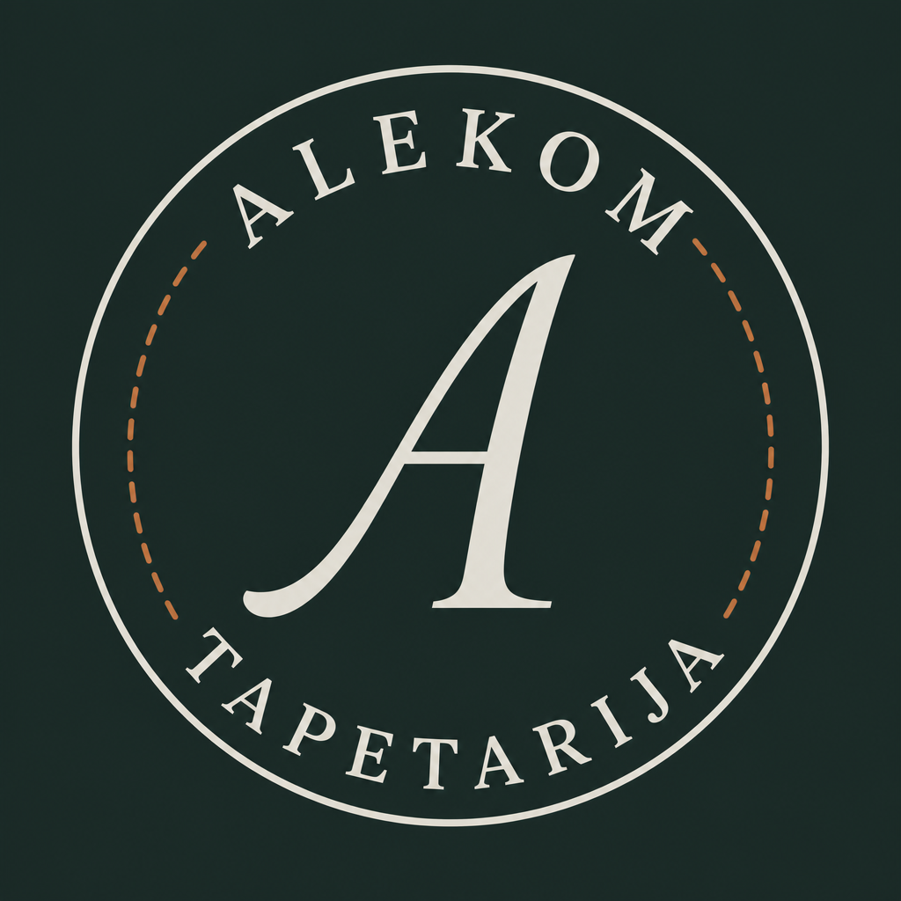

Potvrđen izbor · Tapetarija Alekom
Idemo ovim smerom
Logo 2 (monogram A) na srpskom + spojene boje A i B. Ispod je šta još treba da krenemo u izradu sajta.
Zaključeno: Logo — monogram A · tekst „ALEKOM / TAPETARIJA“ · boje — spoj A (bakar/škriljac) + B (šuma) · fontovi — Fraunces (naslovi) + Manrope (tekst).
Logo (ispravljen)

Tamna verzija — za sajt / InstagramBoje (A + B spojeno)
#1C2F2Asumrak (šuma+škriljac)
#E7E6E0platno
#BE7242bakar-glina
#2B241Forah
#869886lišće
Novi život za omiljeni nameštaj
Tapaciranje i restauracija · Petrovaradin · od 2006.
Šta nam još treba da krenemo
Obavezno
- Fotografije radova — najbolje pre i posle (bar 6 parova). Iste komade, isti ugao. Telefon u dnevnom svetlu je u redu.
- 1–2 fotografije radionice / majstora — za „O nama“.
- Kako da piše ime na sajtu: Tapetarija Alekom / Alekom / Alekom · Komarov?
- Radno vreme (za kontakt i Google profil).
Poželjno (može i kasnije)
- Mejl adresa (ako postoji) za formular.
- Orijentacione cene („od …“) — npr. stolica / fotelja / trosed.
- Kratka rečenica o radnji / šta najviše rade (stilski nameštaj, ugostiteljstvo…).
- Linkovi: Instagram, Fejsbuk (ako treba drugačije od @tapetarijaalekom).
- 2–3 recenzije / citati zadovoljnih klijenata (ako ih imaju).
Kontakt radnje: Tunislava Paunovića 24, Petrovaradin · 021 64 33 621 · 064 24 96 345